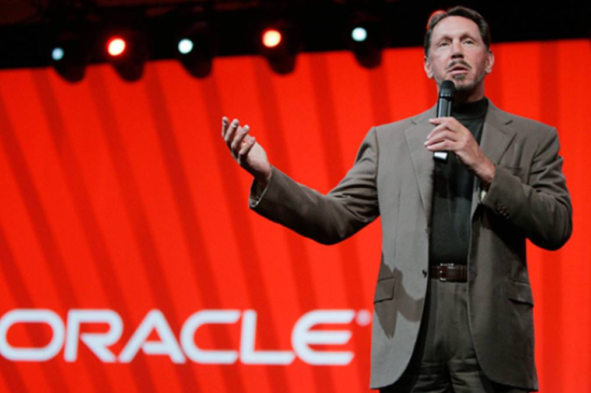

Ларрі Еллісон & Корпорація Oracle
Ларрі Еллісон: Візіонер у світі технологій
- Повне ім'я: Лоуренс Джозеф Еллісон
- Дата народження: 17 серпня 1944 року (Нью-Йорк, США)
- Співзасновник: Корпорації Oracle (1977)
- Статки: понад 100 мільярдів доларів
- Посада: Голова ради директорів, технічний директор, колишній CEO Oracle
- Відомий тим, що:
- Створив одну з найвпливовіших компаній у сфері баз даних
- Має конкурентний характер і сміливі бізнес-стратегії
- Володіє часткою Tesla та розкішною нерухомістю
- Захоплюється вітрильним спортом (переміг у Кубку Америки з Oracle Team USA)

Корпорація Oracle: Технологічний гігант
- Заснована: 1977 рік (як Software Development Laboratories)
- Штаб-квартира: Остін, Техас, США
- Основні продукти та послуги:
- Oracle Database: Потужна система управління базами даних
- Хмарні технології: Oracle Cloud Infrastructure (OCI)
- Корпоративне ПЗ: ERP, CRM, HRM-рішення
- Java: Підтримка та розвиток мови програмування Java
- Клієнти: уряди, великі підприємства, технологічні компанії по всьому світу
- Конкуренти: Microsoft, AWS, Google Cloud, SAP